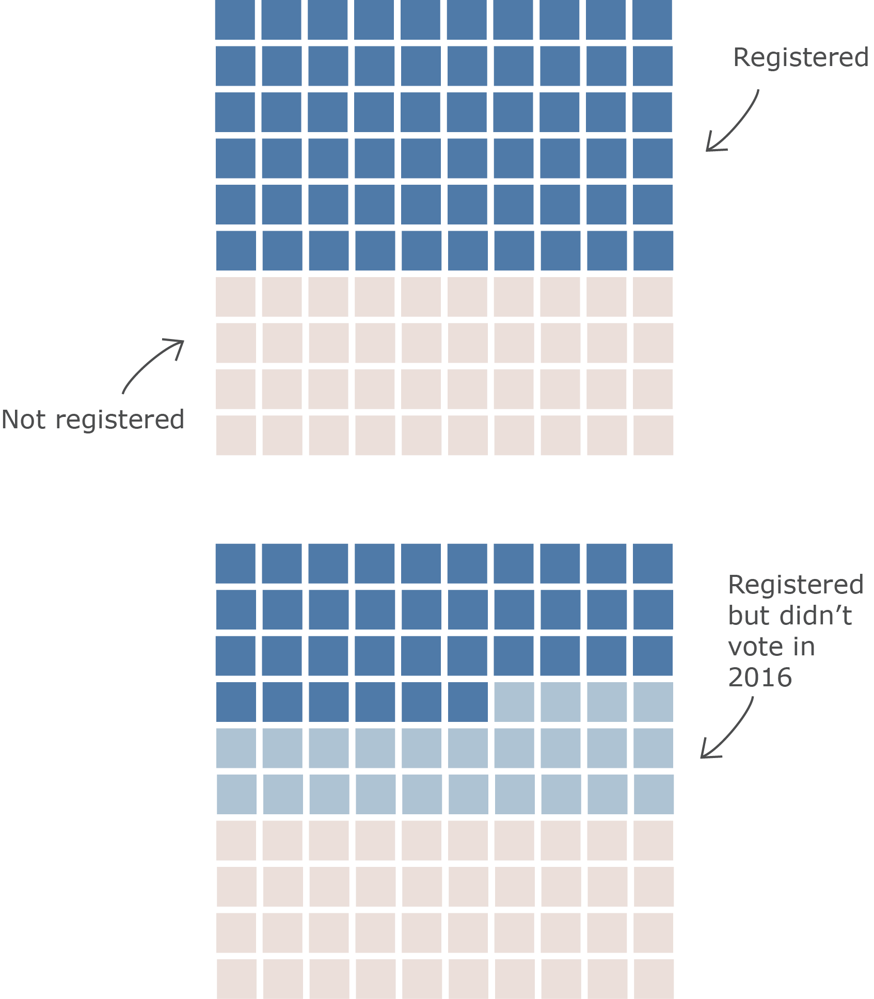
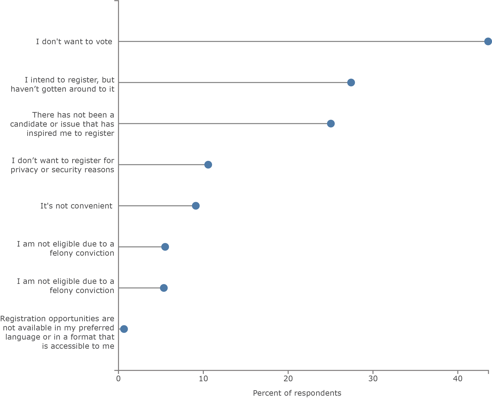
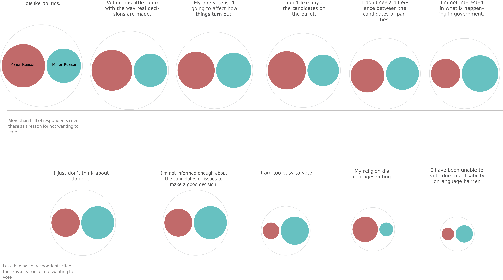

Among those who are registered, “four-in-ten Americans who were eligible to vote did not do so in 2016.”
It’s also important to consider the demographics of nonvoters. They are oftentimes claimed by the democratic party to be white and well-off financially, i.e. privileged. Thus, the logic is often used: “those who choose not to vote won’t suffer the consequences of the election as much as marginalized people will.”
But according to Pew research published in 2018, those who don’t vote are not deemed privileged; they “were more likely to be younger, less educated, less affluent and nonwhite.” This is important because when democrats point fingers at nonvoters claiming that they are a group that consistently abuses their privilege, this is most likely not the case.
The next question, then, is: why don’t they vote? The visualizations below begin to unpack which reasons are relevant to nonvoters and which aren’t. Note, the following visualizations focus on the group of people who were not registered to vote or whose address was out of date, and doesn’t include registered voters who chose not to vote.
One reason that these results are noteworthy is because in this particular context, voter suppression does not seem a likely culprit for not wanting to register. Although voter suppression is a real threat, citing that as the only reason or the main reason for not registering denies agency to those who chose not to. The top answer, cited by 43% of respondents, was 'not wanting to vote', which is an active choice. On the other hand, convenience and accessibility were cited less frequently.
In order to understand people’s decision for not wanting to register, let’s take a closer look at the reasons they cited:

As the last graph shows, nonvoters have myriad reasons why they don’t vote. However, they point to a pattern that those who choose not to register are largely dissatisfied with the candidates and/or don’t believe that voting will make an immediate difference in their lives.
When speaking of people who choose not to register, it’s important not to lump them together into one demographic or point to one reason why. It is crucial to understand the underlying reasons when thinking about the types of candidates that will actually be able to increase voter turnout.